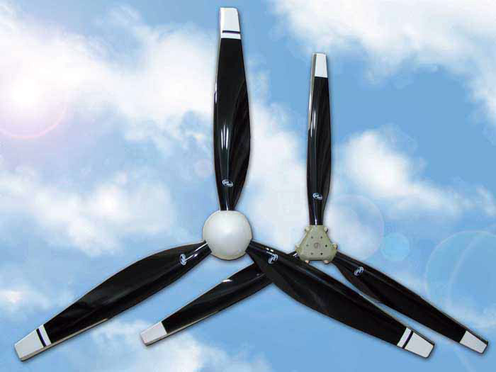

Мы возобновили работу! Будем рады вашим заказам
Изготовление и продажа воздушных винтов для сверхлегких летательных аппаратов
Частный предприниматель Конотоп Александр Васильевич (ЧП Конотоп) – производитель воздушных винтов для сверхлегкиx летательных аппаратов (СЛА): самолетов, дельталетов, автожиров, парапланов в Луганске. Коллектив ЧП состоит из группы специалистов, которые имеют многолетний опыт работы с композиционными материалами.
{kind=link}
Коллектив ЧП Конотоп с 2003 года занимается разработкой, проектированием, изготовлением и испытаниями своих изделий.
Мы сотрудничаем с производителями летательных аппаратов, как в Украине, так и за рубежом. Благодаря информации, поступающей от наших клиентов, производится анализ потребительского рынка с целью улучшения качества продукции.
На сегодняшний день ведется активная работа с изготовителем втулок для винтов изменяемого шага, винты такого типа находят своё применение не только на летательных аппаратах, но и на аэроглиссерах и аэросанях.
Модельный ряд представляют 2-, 3-, 4- и 5-лопастные воздушные винты, диаметром от 400 мм до 1860 мм. Особое внимание стоит уделить винтам с лопастями саблевидной формы, они обеспечивают низкий уровень шума, а также высокие летно-технические показатели. Воздушные винты предназначены для установки на двигатели от 5 л.с. до 130 л.с.

Прочностные испытания были проведены в лаборатории прочности ХАИ, при активной помощи специалистов Восточноукраинского национального университета им. В. Даля.

Продукция защищена патентами.